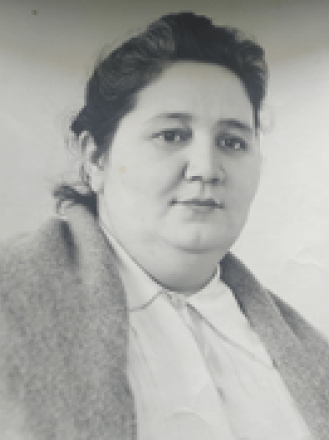

Спецпроект блокада
Исследование блокадных дневников
Центр «Прожито» собирает, описывает и публикует документы личного происхождения и разрабатывает исследовательские инструменты для работы с ними. Материалы публикуются и описываются силами участников-волонтёров, к сообществу которых может присоединиться каждый.
Ищем редактора для дневника
«Отец мой, Георгий Васильевич Антипов, из богатой семьи. У его отца и деда были участки леса, земли. Имел мой дед, Василий Кузьмич, лавку, в которой торговал бакалеей и красным товаром, и, конечно, занимался крестьянством, т.е. земледелием. Жили они богато. Дети у дедушки Василия были все грамотные, и земледелием занимались неохотно».